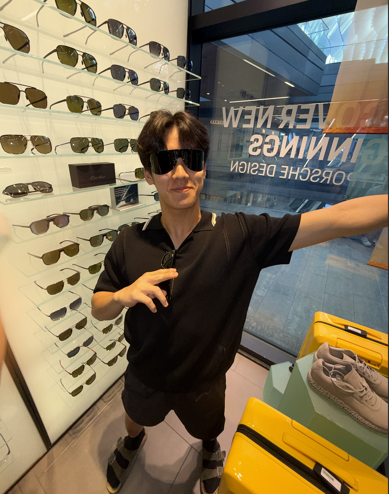

Hi, my name is David

My name is David Chung, and I am a first-year student studying Information Systems with plans
to add an additional major in Artificial Intelligence.
Read More
My name is David Chung, and I am a first-year student studying Information Systems with plans
to add an additional major in Artificial Intelligence. I grew up in South Korea until the age of 3,
where I moved from Southern California to Hawaii then Beijing, before settling in Southern
California. I enjoy a combination of both business leadership as well as computer science,
which is why I plan to pursue both Information Systems and Artificial Intelligence. My career
goal after graduation is to develop my technical skills in computer science as a SWE engineer,
then moving on to project management for tech companies. Outside of my professional life, I spend most of my free time learning new songs and jamming with friends.
I also love skiing, and over this past season have started getting into park skiing.
Read Less